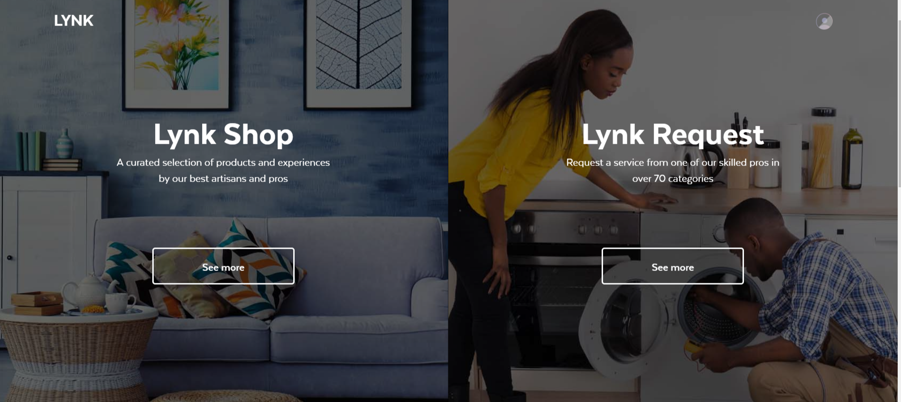

Problem Statement
Lynk Kenya, is in the process of designing and developing their E-Commerce platform Lynk Shop. They are one month away from the launch and need to curate products and experiences for their website.
My Role
Working closely with my supervisor, I supported various parts of Lynk Shop's development including:
- 1. Understanding consumer needs and therefore what content would and would not sell on the site
- 2. Aligning expectations of professionals selling products on the site with the company's goals and vision
- 3. Managing content strategy by writing web content and adding visuals
- 4. Testing, documenting, and prioritizing system updates to enhance user experiences on the backend system used by Lynk Shop staff and frontend site used by consumers.
Challenges
- 1. Meeting the launch deadline
- 2. Uploading quality products and experiences that meet the set target goals
- 3. Understanding the target consumers and their purchasing behaviors in the local context
- 4. Working in a small team with limited resources
Outcome
- 1. Launched the website on the given launch date
- 2. Piloted the website and surveyed roughly 50 consumers for feedback on navigation, flow, on mobile and web, and interest in the site
- 3. Performed heuristic evaluation on the website before and after the launch and presented development team with prioritized list of updates
- 4. Continually met with vendors and sellers using Lynk to sell their merchandise to communicate and align their business goals with Lynk's
